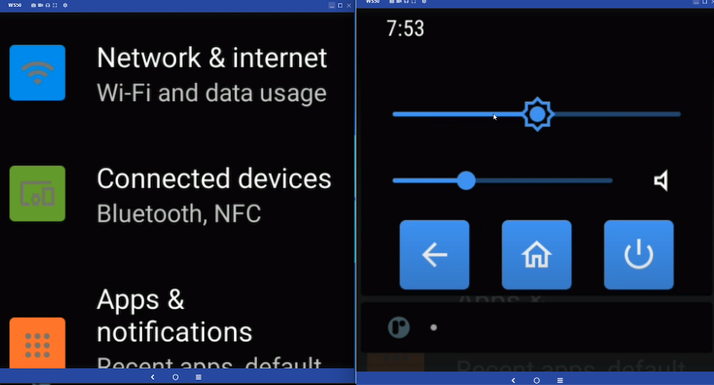

Overview
The Zebra WS50 is an ultra-compact, fully functional mobile computing device with built-in barcode scanner. It's designed to replace multi-device solutions that require both a mobile computing device and a "ring scanner" or other external scanning peripheral. The WS50 can be worn on the wrist like a watch, on the back of the hand like a ring scanner or at the fingertips. Its modular design and available accessories allow the WS50 to adapt to numerous use cases and scanning environments.
 Click image to enlarge; ESC to exit.
Click image to enlarge; ESC to exit.
Key industrial applications for the WS50 include warehousing, transportation and logistics, manufacturing, retail, hospitality and many others. Warehouse workers can use it for receiving, item sorting and put-away; Transportation and logistics workers can perform high-intensity scanning with visual, audible and haptic feedback, and on-screen prompts help ensure proper package placement for loading bay, conveyor, etc. Manufacturing workers can benefit from real-time updates on machine function status and low component stock. Productivity can be improved in all sectors through the WS50's peer-to-peer communications, task assignment and tracking, and many other applications.
For detailed WS50 control illustrations, please see the WS50 Product Reference Guide.
Additional WS50 Resources
- WS50 Product Reference Guide | Comprehensive guide to hardware controls and settings, preinstalled software and device usage details
- WS50 Product Page | Information, specifications, accessories, support and other relevant links
- WS50 Spec Sheet | Hardware, software and device usage details
- WS50 MX Feature Matrix | List of all supported Zebra Mobility Extension (MX) features and links to full details of each
- DataWedge Programmer's Guide | Features, limitations, usage and recommended practices
- Truck-loading Demo App | One method of implementing a warehouse workflow using DataWedge
Also see links from the Android community
App/Device Compatibility
While the WS50 is built around a full-scale application processor and Android version, its two-inch display and 1GB RAM require significant modifications to existing apps, UIs and workflows. In many cases, building an all-new app might be the most efficient route.
 The Android 'Quick Settings' tiles (l) and Launcher.
The Android 'Quick Settings' tiles (l) and Launcher.
Click image to enlarge; ESC to exit.

The Android Settings panel (l) and BACK, HOME and POWER buttons.
Click image to enlarge; ESC to exit.
WS50 Device Variations
The resources available to developers in the WS50 differ from those of most other Zebra devices and wearable terminals. This guide addresses each of the variations and when possible, provides guidance and/or recommendations for additional development resources.
- Two-inch Screen Adaptations:
- Includes a small, scrollable soft input panel (SIP) for data entry
- Split screen functionality is disabled for all apps
- Status bar is hidden and Navigation bar removed to maximize screen space for apps
- Memory limited to 1GB RAM, 8GB internal storage
- No GMS capability
Zebra recommends reading Google's screen compatibility overview and guidelines for adapting apps to support different screen sizes. These and other useful links can be found in the Also See section at the bottom of this guide.
WS50 Specifications
Physical Dimensions
 |
 |
||
|---|---|---|---|
| Variant | WS50 Wrist (device alone) | WS50 Wrist (with mount) | WS50 Converged |
| Outer dimensions (LxWxD) | 2.44 x 2.32 x 0.71 in. (62 x 59 x 18mm) |
2.91 x 2.51 x 0.751 in. (74 x 64 x 19mm) |
2.52 x 2.44 x 1.10 in. (64 x 62 x 28mm) |
| Weight | 2.47 oz. (70g) | 3.95 oz. (112g) | 4.73oz. (134g) |
Hardware Specs
- Display size: 2.0 inches (diagonal)
- Screen dimensions: 1.4 inches (35.88 mm) x 1.4 inches (35.88 mm)
- Max. resolution: 460 x 460 pixels
- Screen density: 320 "bucketized" dpi (actual=326 dpi) Learn more
- Display type: AMOLED capacitive touch panel
- Processor: Qualcomm SDW4100
- Memory: 1MB RAM, 8GB Flash storage
- Battery options:
- Standard battery: 800 mAh Li-Ion PowerPrecision (wrist)
- High-capacity battery: 1300 mAh Li-Ion PowerPrecision (converged)
- Supports fast charging, hot swap
- Battery life: Up to 10 hours continuous operation
- Modalities: Two-finger Trigger Mount, Back-of-Hand (BoH), Wrist
- Sensors: 3-axis accelerometer, MEMS gyroscope, ambient light, proximity (optional)
- Radios: Bluetooth 4.2 BLE, NFC, Wi-Fi 802.11 a/b/g/n/ac/d/h/i/r
- Scanner: SE4770 1D/2D barcode scanner with MDF and auto-triggering
- Camera: 13 megapixel about APIs
- Physical buttons:
- Wrist: four (4, programmable)
- Converged: two (2, programmable), plus trigger (programmable)
- Charging: USB-C cable cup, cradle, multi-slot "toaster" cradle
- LEDs: four (4): 1-charging, 1-notification, 2-scan/programmable via AIDL
- Durability:
- Up to 6-foot (1.8 m) drop to concrete (Converged)
- Up to 4-foot (1.2 m) drop to concrete (Wrist)
- 2000 tumbles at 19.7 inches (0.5 m) (Converged)
- 1000 tumbles at 19.7 inches (0.5 m) (Wrist)
- Operating temperature 14˚F to 122˚F (-10˚C to 50˚C)
- Humidity 5% to 95% non-condensing
- IP65 rating
- Data capture options: SE4770 imager, camera, none
- Push-to-talk: embedded speaker, mic, Bluetooth headset (not included)
Software Specs
- Operating System: Android 11 AOSP
- Custom soft-input panel More info.
- Mobility DNA includes an MX 11.3 feature subset
- AIDL APIs for LED control
- Compatible with Enterprise Mobility Management (EMM) systems
See the WS50 Product Reference Guide for additional hardware, software and device usage details.
Custom SIP
To facilitate keyed input on its reduced screen size, the WS50 comes with a custom software keyboard that's presented whenever an input field gains focus. The alphanumeric keyboard is presented in a scrollable window.
 Standard QWERTY keyboard is scrollable across two screen widths.
Standard QWERTY keyboard is scrollable across two screen widths.
Click image to enlarge; ESC to exit.
 Numeric and special character layouts.
Numeric and special character layouts.
Click image to enlarge; ESC to exit.
WS50 SIP Behavior
- Displayed whenever an data entry field is detected
- Fields support all Android resources for defining field input and cursor movement, including:
- Force Initial Caps
- Force ALL CAPS
- Final action: (↵ multi-line, |> move to next field, √ end)
- The numeric/symbol layouts can be invoked programmatically or by tapping the corresponding key (i.e. "?123")
Learn about handling keyboard input from the Android development community.
Key Remapping
The default WS50 button mappings in the table below can be reassigned using Key Mapping Manager and Zebra StageNow or a company's own EMM system (if compatible).
All WS50 buttons are configured to wake the device by default. Administrators can remove the "Wake-up Source" designation from all except the Right button (see below) using Power Manager and StageNow or an EMM system.
WS50 Button Settings
| WS50 Wrist | WS50 Converged | StageNow/EMM "Key to modify" |
Default Key Code |
|---|---|---|---|
| Left button | Left button | "Left" | "Back" |
| Right button* | Right button* | "Right" | "Home" |
| Top Left button | N/A | "P1 Button" | "Button L2" |
| Top Right button | Trigger | "Button L1" | "Button L1" |
* Only the "short-press" function of the Right button can be remapped (default = "Home"). The Right button cannot be removed as a wake-up source and its long-press function for Power-On cannot be removed or remapped.
RAM Usage
The RAM in the WS50 is limited to 1GB, which must be shared among the Linux kernel, Android app launcher, the Zebra software stack and other services, including a management agent in some organizations. This might leave apps with just a few hundred megabytes for operation. Developers must be mindful of this when designing their apps.
Memory Considerations
- Minimize the number of apps running at any one time
- Develop simple workflows and load only one or two tasks at a time
- Design single-task UIs that conform to UX/UI Considerations below
While the WS50 does NOT implement Android Wear OS, some of the principles of Wear OS might be helpful when developing apps for WS50 devices.
UX/UI Considerations
Zebra recommends using Google Material Design tools and its design guidelines as a foundation for starting new apps. See the video above for a quick overview. Zebra also advises observing the guidelines below when building UI screens from scratch.
Color Usage
With the unique characteristics of the WS50 display, it's helpful to keep the following in mind when selecting colors for use on the device.

Avoid Blue
Blue is the most challenging color for the WS50 LCD panel to render, and its use impacts display longevity. If blue must be used, select warmer shades whenever possible.
Use 'Full Black'
The WS50 display turns off each individual pixel in any region of the UI that's instructed to display "full black" (as opposed to very dark colors). This helps to maximize device operation while on battery and provides higher contrast ratios for UI screens. If the app displays black text on a white background, consider using the inverse.
Simplify UIs
Workflows and tasks should be broken into a series of simple, one-screen steps. This is critical for maximizing worker efficiency and minimizing user frustration caused by misplaced screen taps.
Touch Zones
According to a study of human fingertips and the mechanics of tactile sense conducted by the MIT Touch Lab , the average human fingertip is about 0.31 to 0.40 inches (8–10 mm) in diameter. Developers should therefore keep in mind that any physical area intended as a touch point that's smaller than 0.40 inches (10 mm) has the potential to create tapping errors with adjacent touch zones.
 Average finger size on the actual display size.
Average finger size on the actual display size.
Click image to enlarge; ESC to exit.
Recommendations
Zebra recommends the following when designing WS50 app UIs:
- Minimum "hit zone" sizes for apps:
- Bare finger: 0.28 inches (7 mm)
- Gloved finger: 0.40 inches (10 mm)
- Minimum "touch zone" for two-inch display:
- 60 x 60 pixels (30 x 30 dp)*
- Border around each grid cell:
- 12 pixels (6 dp)
* For keyboard layouts, touch zones can be smaller. With a 2X scale ratio, dp values are half the pixel values.
What's a dp?
Modern UI tools use the term "density-dependent pixel" (dp) when referring to pixel-based screen spacing relative to a 160 dpi screen. This allows for the wide variety of screen densities available today. For example, 1dp (pronounced "one dip") is equal to one pixel on a 160-dpi screen and two pixels on a 320-dpi screen.
Example Layouts
 Click image to enlarge; ESC to exit.
Click image to enlarge; ESC to exit.
 Click image to enlarge; ESC to exit.
Click image to enlarge; ESC to exit.
Touch Zones
 Click image to enlarge; ESC to exit.
Click image to enlarge; ESC to exit.
Click image to enlarge; ESC to exit.
Radius Values
With a 2x scale ratio, dp values are half that of pixel values. Click image to enlarge; ESC to exit.
User Interactions
When planning the app UI, the following specs and guidelines might be helpful.
- Native resolution of the WS50 is 460 x 460 pixels
- Zebra recommends a resolution of 230dp x 230dp (exported at 2X) when sketching apps
- For margins and spacing:
- Most measurements should align to an 8dp grid
- For iconography, typography and other small components, use a 4dp grid
- To avoid an "overcrowded" UI, set padding at 10–16dp
- Font size:
- Body copy: 14pt
- Captions: 12pt
- No text should be smaller than 12pt
- Limit the number of buttons on the UI (see examples):
- Two (2) buttons when presented with text and/or other info
- Three (3) buttons (alone), radio buttons or check boxes
- Four (4) buttons as icons (no text)
- Separate UI components by 12 pixels (6 dp)
- If displaying text, use short sentences to eliminate the need to scroll
- Link "bottom-of-UI" button pairs to physical buttons to give users a choice of interaction method
- Touch Zones such as buttons should in most cases be set to 60dp for most screen regions, and 80dp in areas close to screen edges. However, this recommendation is flexible since using the 80dp spec for a button bar across the bottom of the WS50 screen could contain only three buttons. Touch zones should be no less than 48dp.
- Produce paper prototypes to simulate an WS50 screen and visualize the app's UI design. The WS50 screen measures about 1.4 inches (35.88 mm) square, so be mindful about cramping more information and functions. Less is better for WS50.
- For Layouts it's usually better to implement a ConstraintLayout, which performs better and is more user friendly than relative layouts and scrollable view ports.
- "Tuck away" supplementary app info in a menu, "info" button or other access control to minimize impact on UI space.
WS50 configuration with all four physical buttons accessible. Click image to enlarge; ESC to exit.
WS50 configuration with two physical buttons accessible. Click image to enlarge; ESC to exit.
Other Recommendations
Use hardware buttons
Users expect the ability to press buttons on the device to control app actions to start, stop, or pause activities. Buttons also help improve productivity and task completion times and reduce incorrect screen touches. Depending on device configuration, two or four of the WS50's physical buttons (plus a thumb trigger on some variants) can be assigned custom functions. See Key Remapping.
Use haptic feedback
Feeling vibration to confirm actions can help improve task accuracy and completion times.
Use touch lock
Disabling the touch capability can help improve the user experience in some cases. For example, in bouncy or other conditions where accidental touch is likely, it makes sense to disable touch to prevent incorrect or unwanted actions.
Design for critical tasks
The smaller display brings new challenges to the overall UX. UI components must be bigger to make the device easy to use. Designing the app for critical tasks should be the priority. Focus the UI on one or two tasks at a time rather than the full app experience.
Test for usablity
Android apps designed for full-sized screens will have user experience issues when displayed on a tiny screen. App users will encounter buttons that are smaller than normal, small text that's difficult to read, clipped information and other usability issues. Thorough testing on the wearable device can help resolve these issues.
Prioritize features, content
Apps designed for Zebra's TC- and MC-series devices might contain features that are not applicable to the core use cases for wearable devices. Consider disabling such features in favor of the minimum content and features necessary for core use cases. Focusing on fewer components will increase user engagement with the device and simplify its usage.
Optimize for the wrist
Completing tasks quickly helps minimize ergonomic discomfort and arm fatigue. Consider the physical activities required for using the app and try to economize user motion whenever possible.
Camera APIs
Camera usage on WS50 devices is subject to the following guidelines and limitations:
- Zebra recommends using Camera API2, which supports devices running Android 5 and later.
- WS50 supports the following image formats only:
- JPEG
- PRIVATE
- YUV_420_888
- YV12
- To get supported size(s) for a format, use the
StreamConfigurationMap.getOutputSizes(format)method. - Limit camera apps to reported size(s) for normal camera operations.
- Due to its constrained hardware specs, WS50 is reported by
android.info.supportedHardwareLevelasLEGACY.
See CameraCaptureSession docs for information about working within these limitations. - WS50 is reported by
android.request.availableCapabilitiesasBACKWARD_COMPATIBLE.
See CameraCharacteristics docs for information about working within these limitations.
LED Control
The WS50's left and right multi-color LEDs are controlled using the Zebra LED service through its Android Interface Definition Language (AIDL) interface. This permits an app to control WS50 LEDs without the need for Android Notification APIs and the accompanying on-screen notifications. The sample code below can be used in an app to specify which LED to control on the device and which color to display.
Click image to enlarge; ESC to exit.
To control WS50 LEDs:
1. Download and add the .aidl file into the Android Studio project.
2. Add the standard AIDL boilerplate code to connect with and disconnect from the Zebra LED service.
Note the component name in the sample code below:
package com.mycompany.mysampleapp;
// …imports go here…
public class MySampleActivity extends Activity {
private static final String TAG = "MySampleActivity"
private ILed mLedService = null;
@Override
protected void onCreate(Bundle savedInstanceState) {
super.onCreate(savedInstanceState);
//...
// Connect to the AIDL interface for LED control.
Intent intent = new Intent().setComponent(new ComponentName("com.zebra.led", "com.zebra.led.LedService"));
bindService(intent, ledConnection, Context.BIND_AUTO_CREATE);
}
@Override
protected void onDestroy() {
unbindService(ledConnection);
super.onDestroy();
}
/**
* Monitors the connection to the LED service.
*/
private final ServiceConnection ledConnection = new ServiceConnection() {
@Override
public void onServiceConnected(ComponentName componentName, IBinder iBinder) {
mLedService = ILed.Stub.asInterface(iBinder);
}
@Override
public void onServiceDisconnected(ComponentName componentName) {
mLedService = null;
}
};
3. Call setLed to control the Left and Right LEDs:
private void sampleLedOperations() {
// Connection from bindService is asynchronous, so be sure we have a connection first.
if (mLedService == null) return;
try {
mLedService.setLed(LED_LEFT, Color.WHITE); // Sets the Left LED to white
mLedService.setLed(LED_RIGHT, Color.BLUE); // Sets the Right LED to blue
mLedService.setLed(LED_LEFT, Color.TRANSPARENT); // Turns off the Left LED
} catch (RemoteException|IllegalArgumentException|UnsupportedOperationException e) {
Log.e(TAG,"Failed to set led. Error: "+ e);
Toast.makeText(this, e.getMessage(), Toast.LENGTH_SHORT).show();
}
}
}
The WS50 LEDs support only solid illumination; "blinking" or "flashing" of the LEDs is not supported.
Proximity Sensor
The WS50 can be equipped with an optional proximity sensor, which enables the device to be aware of nearby objects and trigger an event, such as activating the device scanner.
Behavior of the proximity sensor is controlled using Auto Trigger Manager through Zebra StageNow, OEMConfig or a company's EMM system, if compatible.
AIDL File
The Zebra aidl file is shown below and is available for download.
// Copyright (c) 2020-2021 Zebra Technologies Corporation and/or its affiliates. All rights reserved.
package com.zebra.led;
/**
* Interface for apps to control device LEDs. Use this interface when you wish to control LEDs
* beyond what is available in Android's Notification API; for example, to light an LED without
* showing an on-screen notification, or to specify which LED when there is more than one (such as
* on the WS50).
*/
interface ILed
{
/** LED id for a single app-controlled LED (available on Sharp RZ-H270, red and green
colors only) */
const int LED_USER = 1;
/** LED id for the left LED on devices with multiple LEDs (available on Zebra WS50) */
const int LED_LEFT = 2;
/** LED id for the right LED on devices with multiple LEDs (available on Zebra WS50) */
const int LED_RIGHT = 3;
/**
* Sets an LED to a solid color. LED and color availability varies by product.
*
* @param ledID the LED to control, one of the LED_ constants
* @param color the color to set, in standard Android ARGB format. The opacity (A) is
* ignored. Use Color.TRANSPARENT (0) to turn the LED off.
* @throws IllegalArgumentException the LED is not available to control on this product, or the
* the given color is not supported for the LED
*/
void setLed(int ledId, int color);
/**
* Sets an LED to a blinking color. LEDs, color availability, and blinking support varies by
* product.
*
* @param ledID the LED to control, one of the LED_ constants
* @param color the color to set, in standard Android ARGB format. The opacity (A) is
* ignored.
* @throws IllegalArgumentException the LED is not available to control on this product, or the
* the given color is not supported for the LED
* @throws UnsupportedOperationException blinking is not supported for this product or LED
*/
void setLedBlinking(int ledId, int color);
}
Android Studio Warning
When connecting the WS50 device to a development host computer, Android Studio sometimes displays a message similar to that shown in the image below:
 Android Studio warning can be safely ignored or supressed.
Android Studio warning can be safely ignored or supressed.
To prevent display of the message above, add the following line to the app's manifest.xml file:
<uses-feature android:name="android.hardware.type.watch" required=”false” />
Power Management
The WS50's 1300 mAh Li-Ion PowerPrecision+ battery is rated to provide a full 10 hours of continuous operation. However, battery performance varies greatly depending on usage patterns and device settings, especially those of the display panel. To maximize operation of WS50 devices while on battery power, Zebra recommends the following power-management best practices:
To Prolong Battery Life:
- Set screen brightness to the minimum level for effective use
- Set a short screen timeout interval (10-15 seconds)
- Set the device to wake only when touching the scan trigger or display
- Ensure apps are managing activities during the Doze maintenance window
- Do not disable Doze mode through MX
- Do not "whitelist" an app for battery optimization (prevents Doze mode)
- Test apps to ensure proper operation when entering/exiting Doze mode
Also See
From Zebra Technologies:
- WS50 Product Reference Guide | Comprehensive guide to hardware controls and settings, preinstalled software and device usage details
- WS50 Product Page | Information, specifications, accessories, support and other relevant links
- WS50 Spec Sheet | Hardware, software and device usage details
- WS50 MX Feature Matrix | List of all supported Zebra Mobility Extension (MX) features and links to full details of each
- DataWedge Programmer's Guide | Features, limitations, usage and recommended practices
- Truck-loading Demo App | One method of implementing a warehouse workflow using DataWedge
From the Android development community:
- Screen compatibility overview | Adapting apps to different screen sizes and pixel densities
- Declare restricted screen support | Limit an app's execution to specific screens, if desired
- About the Android Interface Definition Language (AIDL) | For controlling WS50's two multi-color LEDs
- Principles of Wear OS | Some UI and task-based development techniques found here can apply to WS50
- Android ARGB specifications | Android app ints, longs and color instances
- Handling keyboard input | Tips for a great user experience when manual data entry is required
- Camera version support | Differences between camera APIs and HALs, and compatibility test suites